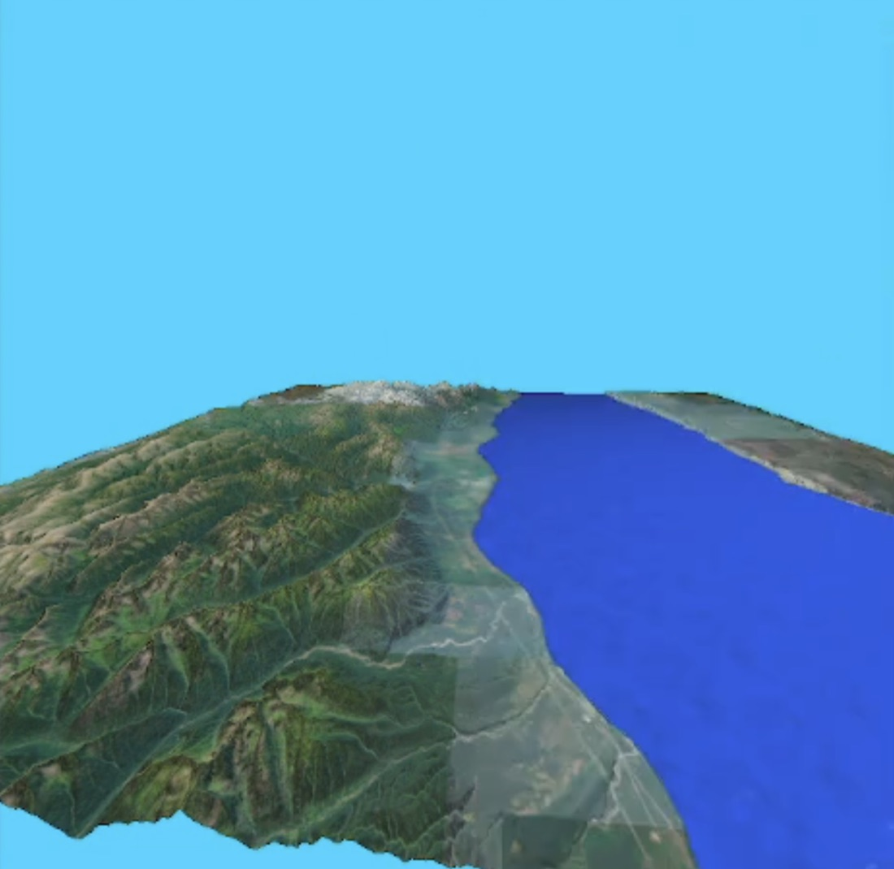

# Andrzej Jurga
AI Integrations Engineer · Poznań, Poland
> I fell in love with coding because it won't let you half-understand anything. To make something actually work you have to understand it to a very high degree: how the data is shaped, why the light falls on a mountain the way it does, what really happens between a request and a response.
>
> That itch has taken me from my first programs in technical school, through five years of untangling real production problems in support, to building AI agents today. Sooner or later, every new tool ends up taken apart until it makes sense.
## what I'm into right now
- AI agents that do real work, plugged into internal tools through mcp
- RAG over messy, real-world documentation
- automating the boring parts away with n8n
- tweaking my neovim config when I should be doing any of the above
## stack
primarypython
aigoogle adk · ai agents · rag · mcp · n8n · llm integrations
datarest apis · json · xml · xpath · regex · sql
toolslinux · git · neovim
## background
- Eng. degree in Computer Science, Adam Mickiewicz University (2025)
- 5 years in 2nd-line support at XTM International, now building AI there
<!-- projects.md has the things I've built -->
# projects
## izery — waste collection system featured
A system for ZUOK „Izery”, a municipal waste company in Lubomierz. Staff manage collection schedules in a web panel; residents get them, with reminders, in a mobile app. I built the server and designed the database.
- REST API in Node.js + TypeScript + Express serving both the React web panel and the React Native app
- MySQL schema with temporal versioning: schedule changes are kept as history instead of being overwritten (my thesis chapter)
- JWT authentication with bcrypt-hashed passwords, file uploads, rotating logs
- scheduled push notifications for upcoming collections with node-cron + Expo
- unit and integration tests with Jest + supertest; load-tested for ~30k users
- deployed to the client's infrastructure, accepted after handover, published on Google Play
stacktypescript node.js express mysql jwt jest expo
linksgoogle play ↗ · private repo
## earth visualizer — 3D terrain renderer featured
Renders a 1°×1° patch of Earth from NASA SRTM elevation data at 30 m resolution, lit by the sun for any chosen date and time. I wrote the engine the rest of the team built on.
- HGT loader that turns raw elevation data into a terrain mesh, with heavy memory optimisation
- multithreaded normal generation and simple detection of corrupt data points
- diffuse + Phong specular lighting; water classified from SRTM water-body masks
- animated water with normal mapping, satellite textures, free camera

stackc++ opengl 3.3 glsl glfw glm imgui
linksprivate repo (university gitlab)
## other
### microshell
A small Unix shell in C: cd, history with search and delete, grep with simple and extended regex, more. Operating Systems course, AMU.
linksc · github ↗
### fractal explorer
A 2D game where you fly through the Mandelbrot set. Team of 3; I wrote the player, enemies, animation, explosions, physics world and music.
linksc++ sfml box2d · github ↗ ·
### graphic calculator
A graphing calculator that plots sin, cos, tan and cot with asymptote detection. One of my first C++ projects (2020).
linksc++ sfml tgui · private repo ·
# experience
## AI Integrations Engineer · XTM International
- find places where generative AI can take manual work out of internal processes
- build AI agents and RAG solutions in Python with Google Cloud ADK
- connect agents to internal tools and data with MCP integrations
- design and maintain n8n workflows that tie systems together
## Support Engineer, 2nd line · XTM International
- investigated and resolved complex customer issues and escalations, including Linux server troubleshooting
- worked directly with customers to find root causes and deliver fixes
- integrated MT engines and LLMs into translation workflows and debugged those integrations
- wrote Python scripts against the XTM API to automate customer and internal tasks
- reported bugs in Jira and worked with developers until they were fixed
## Technical Help Desk Intern · Volkswagen Group Polska
- set up workstations, installed operating systems and applications, troubleshot hardware
- supported users with technical issues and worked with relational databases
# contact
emailajurga1025@gmail.com
githubgithub.com/andrzejjurga ↗
linkedinlinkedin.com/in/andrzejjurga ↗
locationPoznań, Poland
<!-- happy to talk about AI agents, automation, or anyone's nvim config -->